Jobsheet 15
Graphical User Interface
Table of Contents
1 Kompetensi
Setelah menempuh pokok bahasan ini, mahasiswa mampu:
- Membuat aplikasi Graphical User Interface sederhana dengan bahasa pemrograman Java
- Mengenal komponen GUI seperti Frame, Label, TextField, ComboBox, RadioButton, CheckBox, TextArea, Menu serta Tabel.
- Menambahkan event handling pada aplikasi GUI.
2 Percobaan
2.1 Percobaan 1
2.1.1 Langkah Percobaan
- Bukalah program Netbeans IDE yang sudah terinstall di komputer anda!
- Buat project baru, kemudian lengkapi dialog wizard sampai selesai.
- Untuk memudahkan pengorganisasian source code, buatlah package dengan nama
identifier.percobaan1(gantilah identifier dengan identitas anda, contoh penamaan package:dhanifudin.percobaan1). Buat class baru dengan nama
SimpleFramepackage dhanifudin.percobaan1; public class SimpleFrame extends javax.swing.JFrame { }
Kemudian tambahkan constructor ke dalam class
SimpleFrame// .... public Simpleframe() { super("Simple Frame"); } // ....
Tambahkan method dengan nama
initUI()dengan akses modifierprivate// .... private void initUI() { } // ....
Pada body method dari
initUI()tambahkan perintah berikut.private void initUI() { // Ketika icon silang pada window ditekan, maka window akan ditutup setDefaultCloseOperation(WindowConstants.EXIT_ON_CLOSE); setLayout(new FlowLayout()); setSize(400, 400); // Mengatur kemunculan window di tengah layar monitor setLocationRelativeTo(null); }
Untuk menggunakan class
WindowConstantsdanFlowLayoutanda perlu mengimport classnya terlebih dahulu yang terdapat dalam packagejavax.swing.WindowConstantsdanjava.awt.FlowLayout. ClassFlowLayoutmerupakan salah satu jenis classLayoutManageryang bertugas untuk mengatur layout dari komponen GUI.Tambahkan main program dalam class tersebut
// .... public static void main(String[] args) { SimpleFrame frame = new SimpleFrame(); frame.setVisible(true); } // ....
Jalankan program dengan menggunakan opsi
Run File.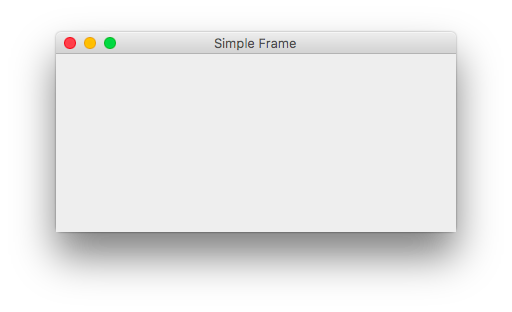
- Jika langkah-langkah dilakukan dengan benar, maka akan muncul sebuah frame window.
Untuk menambahkan tombol pada frame, gunakan class
JButtonkemudian tambahkan ke frame dengan methodadd().private void initUI() { setDefaultcloseOperation(WindowConstants.EXIT_ON_CLOSE); // Deklarasi dan instansiasi helloButton JButton helloButton = new JButton("Hello World!"); // Menambahkan tombol helloButton ke dalam frame add(helloButton); // ... }
- Jalankan program sekali lagi dengan opsi
Run File. Ketika tombol ditekan, tombol masih tidak melakukan aksi tertentu. Tambahkan event handling ke tombol, dengan cara membuat class yang mengimplementasikan interface
ActionListener. Buatlah sebuah class baru, dengan namaActionHello.package dhanifudin.percobaan1; class ActionHello implements ActionListener { private JFrame frame; public ActionHello(JFrame frame) { this.frame = frame; } @Override public void actionPerformed(ActionEvent e) { } }
Supaya
ActionListenerdanActionEventdikenali, importjava.awt.event.ActionListenerdanjava.awt.event.ActionEventterlebih dahulu.Untuk memunculkan pesan dialog, digunakan class
JOptionPane. Tambahkan baris kode berikut dalam methodactionPerformed(ActionEvent e).// .... // Menampilkan pesan dialog JOptionPane.showMessageDialog(frame, "Hello Wolrd!", "Hello", JOptionPane.INFORMATION_MESSAGE); // ....
Import
JOptionPanedarijavax.swing.JOptionPane.Tambahkan event ke tombol, dengan menggunakan
addActionListener().// .... JButton helloButton = new JButton("Hello World!"); // Menambahkan event ke tombol helloButton helloButton.addActionListener(new ActionHello(this));
- Jalankan program dengan opsi
Run File, jika langkah-langkah dilakukan dengan benar maka akan muncul sebuah dialog ketika tombol ditekan.
2.1.2 Pertanyaan
- Pada percobaan 1, class
SimpleFramemerupakan class turunan dari? - Untuk menambahkan suatu komponen GUI ke dalam Frame, digunakan perintah apa?
- Tambahkan tiga buah tombol,
Pagi,SiangdanMalamyang ketika ditekan, akan muncul dialog ucapan selamat sesuai dengan tombol yang ditekan! - Bagaimana tampilan tombol-tombol pada soal nomer 3? Kenapa hal itu bisa terjadi?
2.2 Percobaan 2
2.2.1 Langkah Percobaan
- Pada panel
Projects, klik kanan padaSource Packages. - Buatlah file class baru dengan cara klik kanan dan pilih
New->JFrame Form. Ubah nama class dengan namaBiodataFramedan nama packageidentifier.percobaan2(gunakan identitas anda sebagai identifier nama package). Setelah proses selesai, akan muncul tampilan GUI Editor seperti pada gambar berikut.
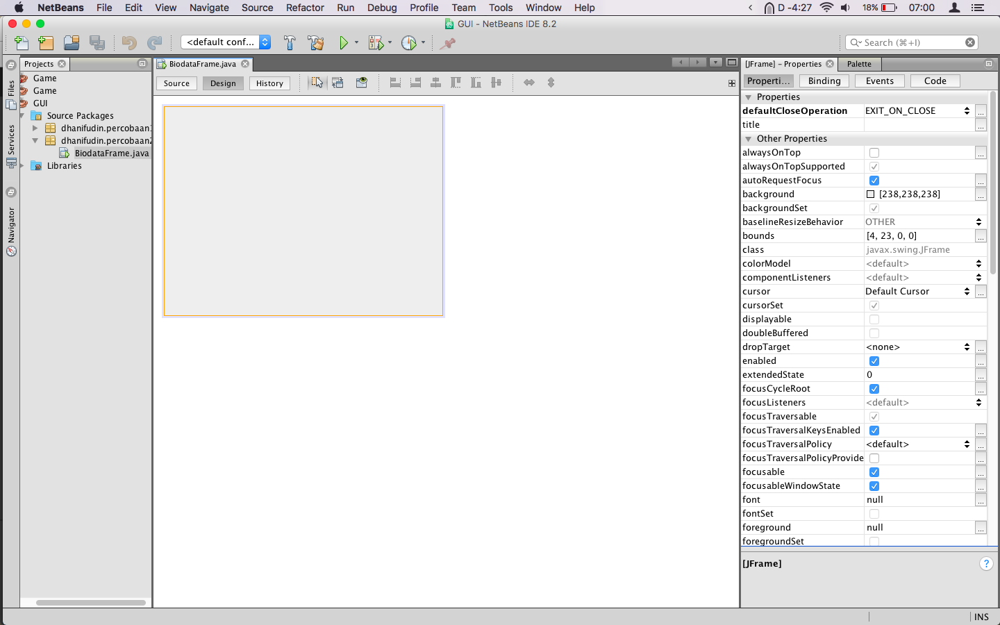
- Perhatikan pada panel sebelah kanan, terdapat panel
PropertiesdanPalette(susunan panel ini, mungkin saja berbeda pada IDE anda.). - Panel
Propertiesdigunakan untuk mengatur atribut-atribut yang dimiliki oleh suatu komponen GUI. Sedangkan panelPaletteberisi, komponen-komponen GUI yang bisa anda tambahkan ke dalam GUI Editor. Drag beberapa komponen GUI dari panel
Palettesehingga menghasilkan tampilan seperti gambar berikut.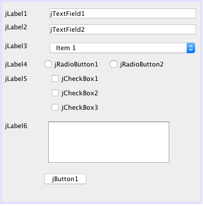
Untuk lebih jelas komponen apa saja yang dibutuhkan, anda dapat menggunakan panel
Navigator.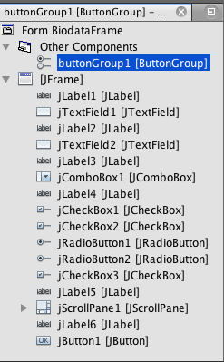
Ubah tampilan informasi teks pada GUI Editor, sehingga menghasilkan tampilan pada gambar berikut (gunakan klik kanan pada komponen yang diinginkan, dan pilih opsi
Edit Text).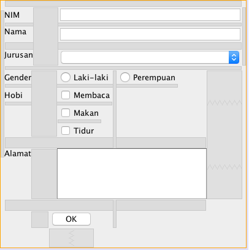
Khusus untuk komponen JComboBox pada jurusan, perlu diatur model yang ditampilkan. Gunakan panel
Propertieskemudian atur nilainya sehingga menjadi seperti pada gambar berikut. Atur nilai atributselectedIndexmenjadi-1sehingga tidak ada nilai yang dipilih.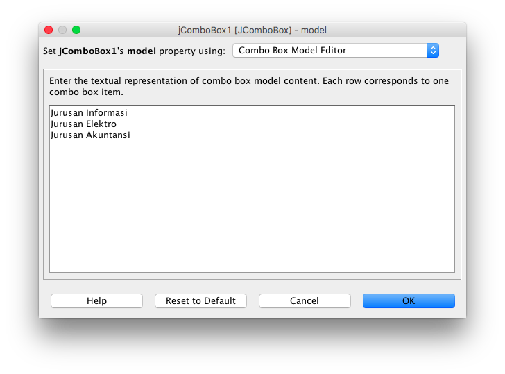
Sedangkan untuk komponen JRadioButton, atur atribut
buttonGroupmenjadibuttonGroup1. Kemudian klik kanan padajRadioButton1pilih opsiCustomize Codedan tambahkan kode berikut pada bagian paling bawah.jRadioButton1.setActionCommand("Laki-laki");- Lakukan hal yang sama untuk
jRadioButton2, atur nilainya menjadiPerempuan. - Untuk memudahkan penambahan logika pemrograman, ubah variabel-variabel komponen mengikuti tabel berikut.
| Variabel Lama | Variabel Baru |
|---|---|
| jTextField1 | nimText |
| jTextField2 | namaText |
| jComboBox1 | jurusanComboBox |
| jRadioButton1 | lakiRadioButton |
| jRadioButton2 | perempuanRadioButton |
| jCheckBox1 | bacaCheckBox |
| jCheckBox2 | makanCheckBox |
| jCheckBox3 | tidurCheckBox |
| jTextArea1 | alamatText |
| buttonGroup1 | genderGroup |
| button1 | okButton |
Anda dapat menggunakan mode Preview untuk melihat hasil tampilan, tanpa
perlu menjalankan program. Klik tombol icon yang seperti mata.
- Pada saat ini, tombol
OKmasih belum mempunyai aksi tertentu. Anda dapat menambahkan aksi dengan cara klik kanan pada tombol, pilihEvents->Action->actionPerformed(atau anda dapat melakukan klik ganda). - Kemudian tambahkan instruksi-intruksi berikut.
StringBuilder sb = new StringBuilder(); sb.append("Nim: ").append(nimText.getText()).append("\n"); sb.append("Nama: ").append(namaText.getText()).append("\n"); // Mengambil jurusan yang dipilih Object jurusanItem = jurusanComboBox.getSelectedItem(); sb.append("Jurusan: ").append(jurusanItem != null ? jurusanItem : "-").append("\n"); ButtonModel genderModel = genderGroup.getSelection(); // Menampilkan RadioButton yang dipilih sb.append("Gender: ").append(genderModel != null ? genderModel.getActionCommand() : "-").append("\n"); sb.append("Hobi: "); if (bacaCheckBox.isSelected()) sb.append(bacaCheckBox.getText()).append("\n"); if (makanCheckBox.isSelected()) sb.append(makanCheckBox.getText()).append("\n"); if (tidurCheckBox.isSelected()) sb.append(tidurCheckBox.getText()).append("\n"); sb.append("\nAlamat: ").append(alamatText.getText()).append("\n"); JOptionPane.showMessageDialog(this, sb, "Biodata", JOptionPane.INFORMATION_MESSAGE);
Class StringBuilder digunakan untuk proses penggabungan. Alternatifnya, anda
dapat menggunakan operasi penggabungan String dengan menggunakan operator +.
- Jalankan program, dengan mengunakan opsi
Run File. - Jika tidak ada permasalahan, maka akan tampil sebuah window seperti pada gambar berikut.
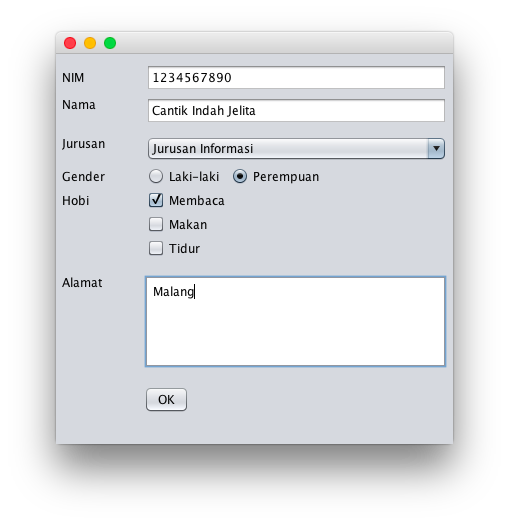
- Dan jika tombol
OKditekan, akan muncul sebuah dialog seperti berikut.
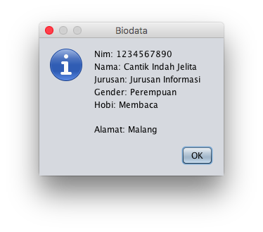
- Untuk menambahkan menu ke dalam GUI, masuk ke GUI Editor. Drag
Menu Barke dalam GUI Editor. Pada menu tersebut, klik kanan kemudian pilihAdd From Palette->Menu Item. - Ubah informasi teks menjadi
Keluardan nama variabel menjadikeluarMenu. - Untuk menambahkan aksi, klik ganda pada
keluarMenu. Kemudian tambahkan baris kode berikut.
// ... Object options[] = { "Ya", "Tidak" }; int result = JOptionPane.showOptionDialog( this, "Apakah anda ingin keluar?", "Konfirmasi", JOptionPane.YES_NO_OPTION, JOptionPane.QUESTION_MESSAGE, null, options, options[1]); if (result == JOptionPane.YES_OPTION) { System.exit(0); } // ...
2.2.2 Pertanyaan
- Apa maksud dari kode berikut
sb.append("Jurusan: ").append(jurusanItem != null ? jurusanItem : "-").append("\n");? Jelaskan! - Mengapa pada bagian logika checkbox, digunakan multiple if?
- Modifikasi program untuk melakukan pemeriksaan pada nilai Nim, Nama, Jurusan
serta Gender harus diisi, jika belum diisi tampilkan pesan peringatan untuk
masing-masing nilai! (Gunakan method
equals()untuk melakukan pembandingan). - Apa fungsi logika
ifpada aksikeluarMenu?
2.3 Percobaan 3
2.3.1 Langkah Percobaan
- Tambahkan package
percobaan3pada projects. - Buatlah class baru dengan nama
Biodata. - Tambahkan atribut-atribut pada class
Biodatamengikuti tabel berikut.
| Nama Atribut | Tipe Data | Nama Atribut | Tipe Data |
|---|---|---|---|
| nim | String | baca | boolean |
| nama | String | makan | boolean |
| jurusan | String | tidur | boolean |
| gender | String | alamat | String |
- Tambahkan default constructor pada class tersebut.
- Gunakan fitur dari Netbeans untuk me-/generate/
constructorsertagetterdansetter(klik kananInsert Code). - Buatlah class baru JFrame Form dengan nama
OuputFrame. Kemudian ubah nilaidefaultCloseOperationmenjadiDISPOSE. - Tambahkan
JTextAreake dalam GUI Editor. Atur ukuranJTextAreasehingga, ukurannya sama denganJFrame. - Ubah nama variabel
jTextArea1menjadioutputText. Tambahkan atribut
biodatadengan tipe dataBiodatake dalam classOutputFrame.// ... private Biodata biodata; // ...
Tambahkan juga method
setBiodata(Biodata biodata)ke dalam classOutputFrame.// ... public void setBiodata(Biodata biodata) { this.biodata = biodata; outputText.setText(biodata.toString()); }
- Copy file
BiodataFramepada packagepercobaan2. Pada panelProjectsklik kanan, pilih opsiCopykemudian klik kanan padapercobaan3pilih opsiPaste->Refactor Copy. Tambahkan atribut
outputFramedengan tipe dataOutputFramedalam classBiodataFrame.// ... private OutputFrame outputFrame; // ...
Pada body dari constructor
BiodataFrame, instansiasioutputFrame.//... public BiodataFrame() { outputFrame = new OutputFrame(); initComponents(); } //...
Modifikasi aksi pada tombol
okButtondalam classBiodataFramemenjadi kode berikut.// ... Biodata biodata = new Biodata(); biodata.setNim(nimText.getText()); biodata.setNama(namaText.getText()); Object jurusanItem = jurusanComboBox.getSelectedItem(); biodata.setJurusan((jurusanItem != null) ? jurusanItem.toString() : null); ButtonModel genderModel = genderGroup.getSelection(); biodata.setGender((genderModel != null) ? genderModel.getActionCommand() : null); biodata.setBaca(bacaCheckBox.isSelected()); biodata.setMakan(makanCheckBox.isSelected()); biodata.setTidur(tidurCheckBox.isSelected()); outputFrame.setBiodata(biodata); outputFrame.setVisible(true); // ...
- Jalankan
BiodataFramedengan menggunakan opsiRun File. - Amati apa hasil dari program tersebut!
2.3.2 Pertanyaan
- Mengapa pada percobaan 3, mendapatkan hasil seperti itu?
- Perbaikilah program, sehingga menampilkan informasi yang tepat! (Petunjuk:
Override
toString()pada classBiodata).
2.4 Percobaan 4
2.4.1 Langkah Percobaan
- Tambahkan package
percobaan4. Pada percobaan ini, akan dibuat window untuk menampilkan biodata para Mahasiswa dalam bentuk tabel. Buatlah class baru dengan nama
BiodataTableModel. Class ini merupakan turunan dari classAbstractTableModel.package dhanifudin.percobaan4; public class BiodataTableModel extends AbstractModel { }
Tambahkan atribut array class
Biodatadalam classBiodataTableModelsertanamaKolom// ... private Biodata[] data; private String[] namaKolom; // ...
Tambahkan constructor
// ... public BiodataTableModel(Biodata[] data) { this.data = data; this.namaKolom = new String[]{ "Nim", "Nama", "Jurusan", "Gender", "Membaca", "Tidur", "Makan" } } // ...
- Implementasikan semua abstract method (anda dapat menekan icon lampu yang berada pada line number).
Implementasikan method
getRowCount().@Override public int getRowCount() { // Mengembalikan jumlah baris, berdasarkan jumlah data return data.length; }
Implementasikan method
getColumnCount()@Override public int getColumncount() { // Mengembalikan jumlah kolom dari tabel return 7; }
Override method
getColumnName(int column)@Override public String getColumnName(int column) { return namaKolom[column]; }
Override method
getColumnClass(int columnIndex)@Override public Class<?> getColumnClass(int columnIndex) { if (columnIndex < 4) return String.class; else return Boolean.class; }
Method
getColumnClass(int columnIndex)digunakan untuk mengatur tampilan kolom pada tabel. Tipe dataBoolean, akan direpresentasikan dalam bentuk checkbox.Implementasi method
getValueAt(int rowIndex, int columnIndex).@Override public Object getValueAt(int rowIndex, int columnIndex) { switch (columnIndex) { case 0: return data[rowIndex].getNim(); case 1: return data[rowIndex].getNama(); case 2: return data[rowIndex].getJurusan(); case 3: return data[rowIndex].getGender(); case 4: return data[rowIndex].isMembaca(); case 5: return data[rowIndex].isMakan(); case 6: return data[rowIndex].isTidur(); } return null; }
- Buat class baru
JFrame Formdengan namaTabelFrame. - Drag
jTableke dalam GUI Editor dan ubah nama variabel menjadibiodataTable. Tambahkan atribut array
Biodatapada classTabelFrame.// ... private Biodata[] data; // ...
Dalam constructor
TabelFrame(), atur nilai dari arrayBiodata.// ... public TabelFrame() { this.data = new Biodata(4); data[0] = new Biodata("1234567890", "Andi", "Jurusan Informasi", "Laki-laki", true, false, false, "Malang"); data[1] = new Biodata("1234567891", "Budi", "Jurusan Elektro", "Laki-laki", true, false, true, "Malang"); data[2] = new Biodata("1234567892", "Cici", "Jurusan Akuntansi", "Perempuan", true, false, false, "Malang"); data[3] = new Biodata("1234567893", "Dodik", "Jurusan Informasi", "Laki-laki", true, true, true, "Malang"); initComponents(); } // ...
- Pada komponen
biodataTable, atur atributmodel. Tekan tombol kecil di sebelah nilai atribut. - Akan muncul sebuah dialog. Pada dialog tersebut, pilih opsi combobox
Custom code. - Ubah baris kode menjadi
new BiodataTableModel(data). Jalankan program dengan opsi
Run File.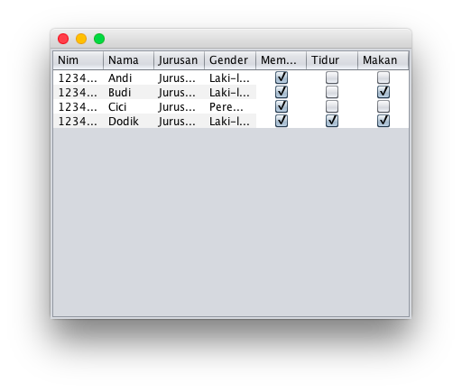
Untuk tampilan tabel sederhana, anda dapat menggunakan
Table model customizerdialog.
2.4.2 Pertanyaan
- Apa kegunaan
BiodataTableModelpada percobaan 4? - Modifikasi program, untuk menambahkan informasi Alamat!
2.5 Latihan
- Buatlah tampilan GUI untuk login (gunakan
JPasswordFielduntuk password) yang menerima inputan username dan password, terdapat tombolLogindanReset. Login diterima jika data yang dimasukkan, username = admin dan password = admin. TombolResetdigunakan untuk menghapus informasi username dan password. Buatlah kalkulator sederhana yang dapat melakukan operasi dua bilangan bulat dengan operator
+,-,*dan/! (Petunjuk: GunakanInteger.parseInt()untuk mengkonversi inputan String menjadi Integer). Atureditablemenjadifalse, sehingga hasil perhitungan tidak bisa diubah.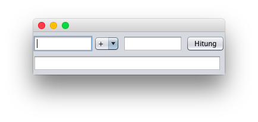
Buatlah aplikasi pencatatan skor bola basket. Aplikasi juga dapat menentukan tim mana yang lebih unggul. Jika poin Tim A lebih tinggi, tampilkan "Tim A Unggul", begitu juga sebaliknya. Tetapi jika poin sama, tampilkan "Imbang".
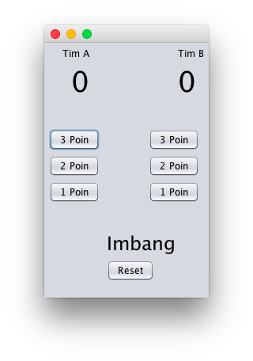